Per default, specr() summarizes individual
specifications by using broom.mixed::tidy() and
broom::glance(). For most cases, this provides a
“sufficient” summary of the relationship of interest and model
characteristics. Sometimes, however, it might be useful to investigate
specific models in more detail or to investigate a specific parameter
that is not provided by the two functions (e.g., r-square). This
vignette shows how to access individual models and extract further
information from them.
If we want to investigate individual models and particularly all aspects of that model, we need to create a custom extract function that also stores the entire model object in the result data frame.
# Custom function
tidy_new <- function(x) {
fit <- broom::tidy(x, conf.int = TRUE)
fit$res <- list(x) # Store model object
return(fit)
}
# Run specification curve analysis
specs <- setup(data = example_data,
y = c("y1", "y2"),
x = c("x1", "x2"),
model = c("lm"),
controls = c("c1", "c2"),
subsets = list(group1 = unique(example_data$group1),
group2 = unique(example_data$group2)),
fun1 = tidy_new)
results <- specr(specs)For this example, we are going to look at two specific models (same independent variables, all controls, all participants, but different dependent variables).
(y_models <- results %>%
as_tibble %>%
filter(x == "x1",
controls == "c1 + c2",
subsets == "all")) %>%
select(x:group2, estimate:res)
#> # A tibble: 2 × 14
#> x y model controls subsets group1 group2 estimate std.error statistic
#> <chr> <chr> <chr> <chr> <chr> <fct> <fct> <dbl> <dbl> <dbl>
#> 1 x1 y1 lm c1 + c2 all NA NA 0.593 0.0393 15.1
#> 2 x1 y2 lm c1 + c2 all NA NA -0.214 0.0389 -5.51
#> # … with 4 more variables: p.value <dbl>, conf.low <dbl>, conf.high <dbl>,
#> # res <list>As you can see, the resulting tibble includes an additional column called “res”. This column includes the entire “model object” and we can use it to further investigate each model.
For example, we can now easily get a full summary of the models and compare individual coefficients and statistics.
y_models %>%
pull(res) %>%
map(summary) %>%
map(coef)
#> [[1]]
#> Estimate Std. Error t value Pr(>|t|)
#> (Intercept) -1.09466509 0.03582021 -30.559989 3.127670e-145
#> x1 0.59291826 0.03933279 15.074403 2.084917e-46
#> c1 0.06781034 0.03327698 2.037756 4.183823e-02
#> c2 -0.04278267 0.03079000 -1.389499 1.649916e-01
#>
#> [[2]]
#> Estimate Std. Error t value Pr(>|t|)
#> (Intercept) 0.79394670 0.03540987 22.421621 1.828378e-90
#> x1 -0.21413105 0.03888221 -5.507172 4.640637e-08
#> c1 0.03921893 0.03289578 1.192218 2.334599e-01
#> c2 0.54186302 0.03043728 17.802607 9.085852e-62Or we could get r-squared values for both models.
This way, we can analyze or compare such statistics across several models.
r2_results <- results %>%
as_tibble %>%
filter(subsets == "all") %>%
mutate(r2 = map(res, r2),
r2 = map_dbl(r2, 1)) %>%
arrange(r2)
r2_results %>%
select(x:controls, r2)
#> # A tibble: 16 × 5
#> x y model controls r2
#> <chr> <chr> <chr> <chr> <dbl>
#> 1 x2 y2 lm no covariates 0.0110
#> 2 x2 y2 lm c1 0.0112
#> 3 x1 y2 lm no covariates 0.0558
#> 4 x1 y2 lm c1 0.0569
#> 5 x2 y1 lm no covariates 0.0827
#> 6 x2 y1 lm c2 0.0844
#> 7 x2 y1 lm c1 0.0872
#> 8 x2 y1 lm c1 + c2 0.0893
#> 9 x1 y1 lm no covariates 0.213
#> 10 x1 y1 lm c2 0.214
#> 11 x1 y1 lm c1 0.216
#> 12 x1 y1 lm c1 + c2 0.217
#> 13 x2 y2 lm c2 0.265
#> 14 x2 y2 lm c1 + c2 0.265
#> 15 x1 y2 lm c2 0.284
#> 16 x1 y2 lm c1 + c2 0.285And we can plot comparisons…
r2_results %>%
arrange(r2) %>%
mutate(rank = 1:n()) %>%
ggplot(aes(x = rank,
y = r2)) +
geom_point() +
geom_line() +
theme_minimal() +
theme(strip.text = element_blank(),
axis.line = element_line("black", size = .5),
axis.text = element_text(colour = "black"))